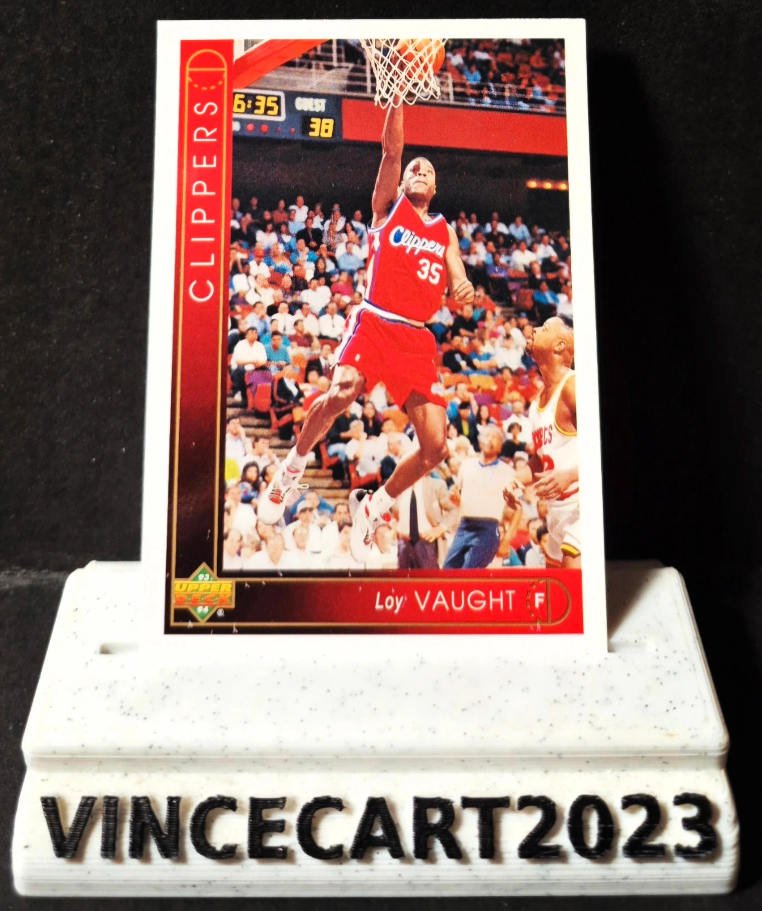

Carte NBA Loy Vaught Upper Deck 1993-94 #111 – Los Angeles Clippers – Vintage
1,25 €
🏀 Carte NBA originale Loy Vaught – Los Angeles Clippers
Je vends cette carte Upper Deck 1993-94, n°111, représentant Loy Vaught sous les couleurs des Los Angeles Clippers.
📌 Caractéristiques :
Joueur : Loy Vaught
Équipe : Los Angeles Clippers
Collection : Upper Deck 1993-94
Numéro : #111
Carte originale vintage
État conforme aux photos (recto/verso)
⭐ Loy Vaught était l'un des joueurs les plus réguliers des Clippers au début des années 1990. Connu pour son efficacité au rebond et son jeu physique, cette carte Upper Deck 1993-94 est une belle pièce pour les amateurs de NBA vintage.
📦 Carte soigneusement protégée
Disponibilité à confirmer sur Vinted.